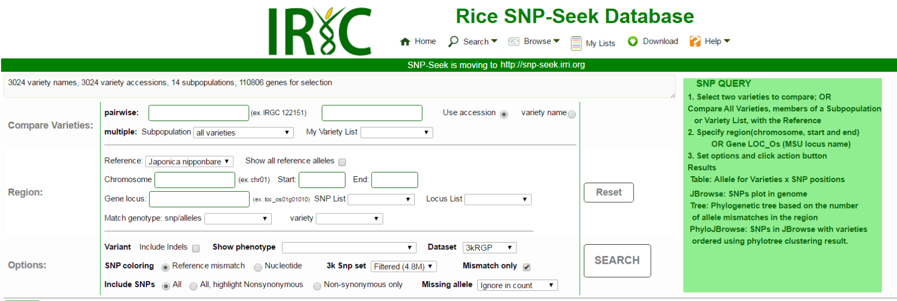
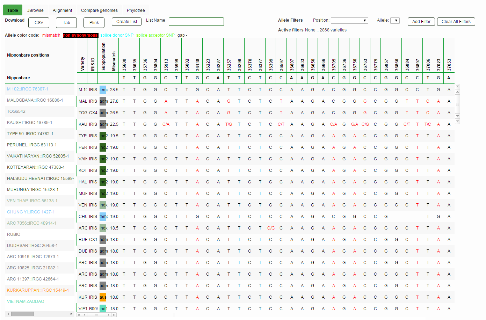
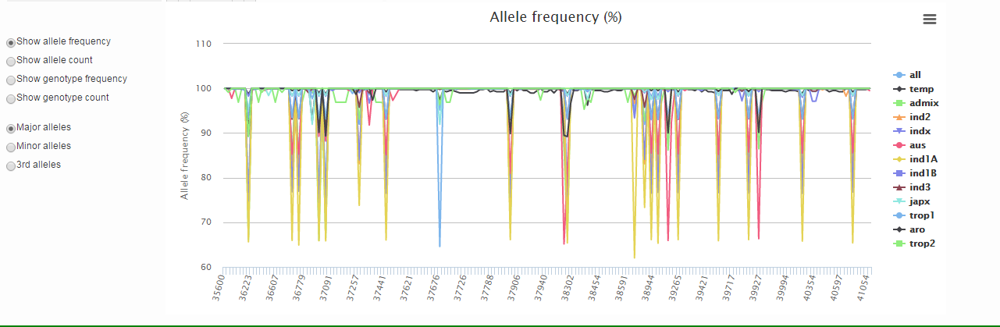
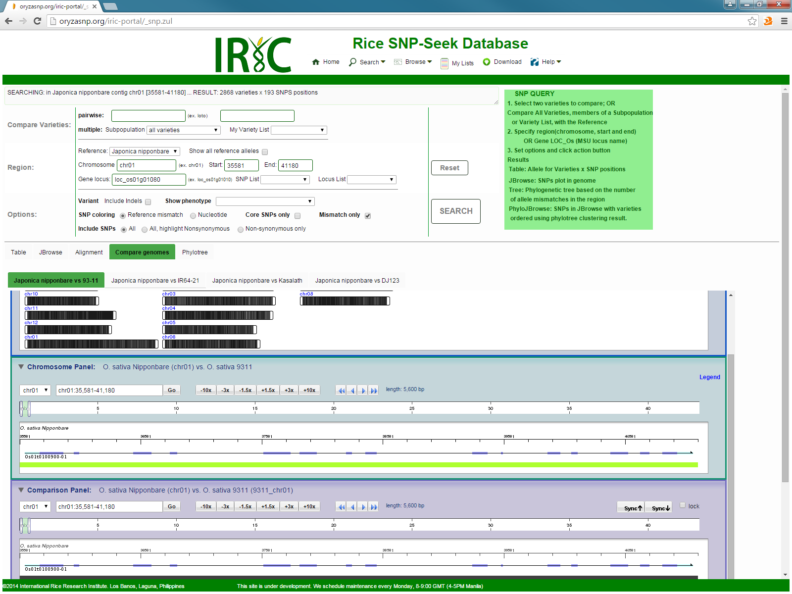
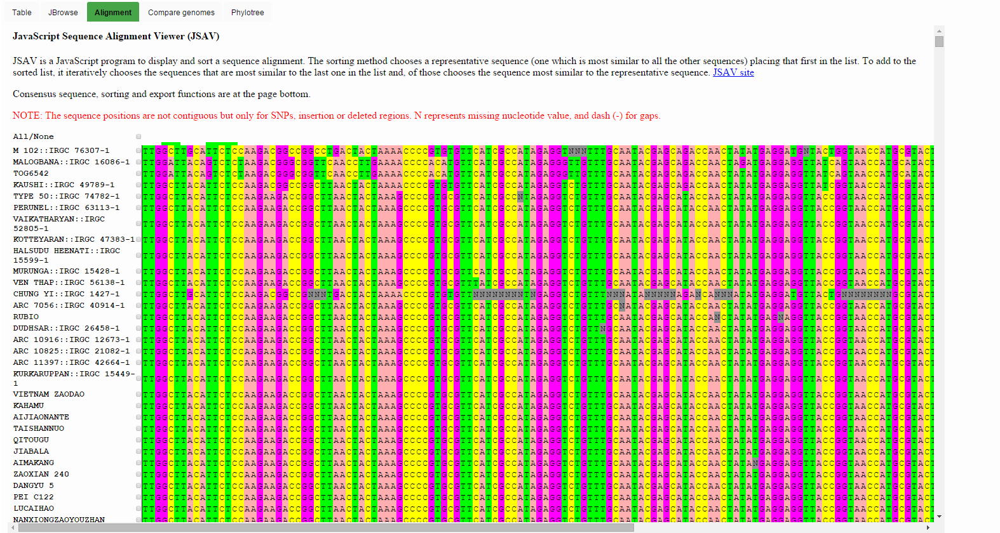
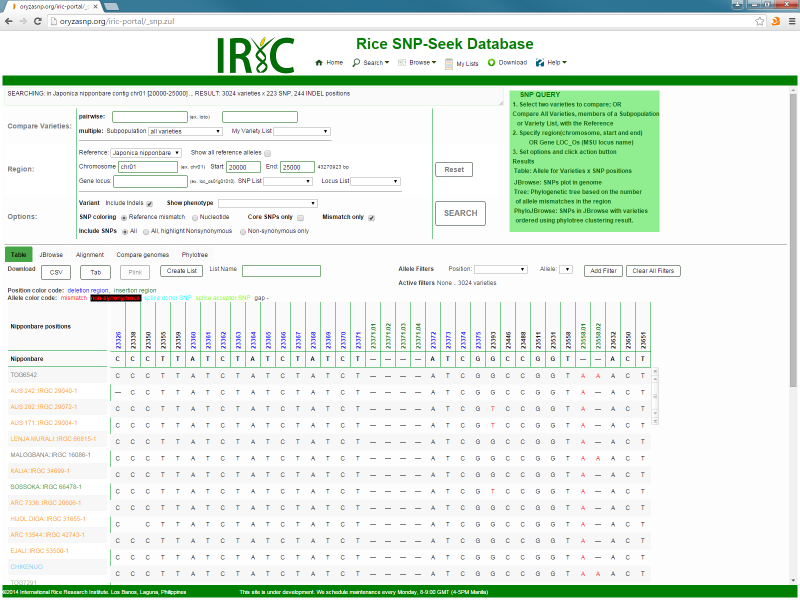
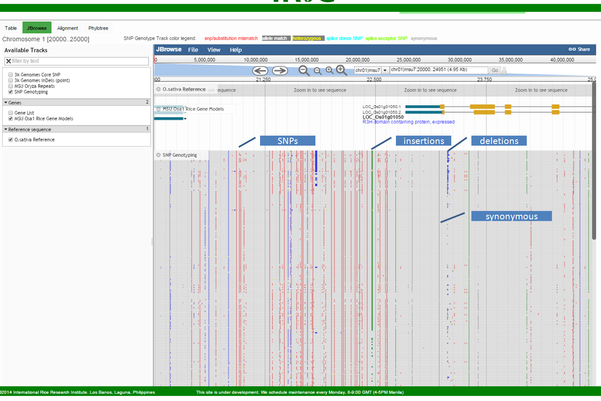
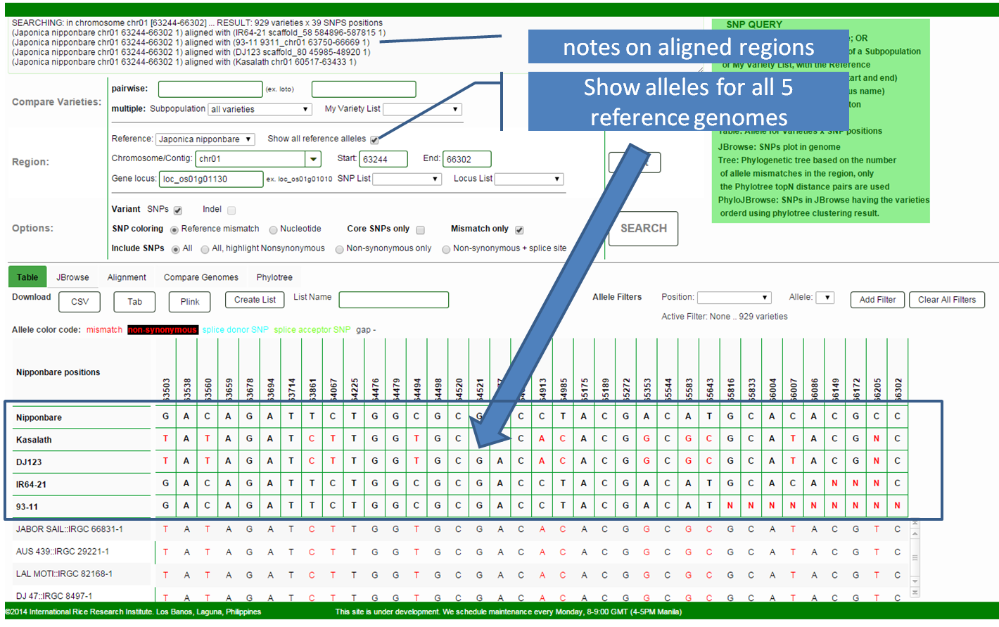

The SNP Query interface has two functionalities, to compare alleles between two specified varieties, and to compare multiple varieties with a reference genome. In both either case, the query region can be specified either by chromosomal region, by gene locus, or by a list of positions.
Steps to query SNPs
- Specifiy varieties
- To compare alleles between two varieties - in the two pairwise boxes, type or select from the drop-down list the varieties to compare. The text boxes have auto-completion feature so you only need to type the first few characters then select from the drop-down list. The choice items and recognized terms can be the variety name or accession based on the selected button at the right.
- To compare the reference with a subpopulation - select the subpopulation from the listbox. Some items in a choices is a group of more than one subpopulation, all indica (ind1,ind2,ind3,indx), all japonica (temp,trop,temp/trop,trop/temp) and all varieties
- To compare reference with a list of varieties - select the variety list name in My Variety List, which are defined in My Lists.
- Specify genome region
- Select the Reference Genome - select among the five sequenced rice genomes to use as reference genome (Japonica Nipponbare, 93-11, IR64-21, DJ123, Kasalath). The chromosome/scaffold and gene locus selections depends on the selected reference genome.
- Check Show all reference alleles – to display the alleles of all 5 reference genomes for each SNP position. The alleles and position conversions between reference genomes are based on pairwise alignment results.
- To sepecify Chromosome/Scaffold region - select the chromosome/scaffold name, type the start and end base positions. Chromosome is avaiable when a fully assembled genome (Nipponbare, Kasalath) is selected, otherwise (IR64-21, DJ123) scaffold is used. 93-11 has both chromosomes and scaffolds.
- To specify Gene locus - type the Gene locus name in the text box. For Nipponbare, we are using the MSUv7 (LOC_OSXXgYYYYYY), RAP (OsXXgYYYYYY), and our merged MSUv71,RAP,FGenesh++ (OsNippoXXgYYYYYY) gene loci names described in NAR Supplementary Materials. For the other 4 reference genomes, we are proposing a new locus naming convention also described below. The gene text box also has auto-completion feature. When a locus is selected, the chromosomal position boxes are automatically filled with the selected gene's region.
- To use a list of SNP positions, select the SNP List previously defined.
- To use a list of gene loci, select the Locus List previously defined.
- A genotype can be defined from a SNP List with allele value for each position. You can Match Genotype between this list and all varieties in the selected dataset. The resulting varieties are ranked by the number of matches with the SNP List. Instead of providing a SNP Liist, the genotype could be that of the selected Variety at the specified region.
- Set options
- Include indels - include indels in the query
- Show phenotype - include the values of the selected phenotype in the results table
- Dataset - select the dataset to query (3kRGP, HDRA, both). If both is selected, there is addition option to use either the union or intersection of the SNP positions.
- SNP coloring determines the color of alleles as displayed in the table and in the Genome Browser. Options are:
- Reference mismatch – SNPs which have polymorphism with the reference are colored red, while the rest is white.
- Nucleotide – SNPs are colored based on the base nucleotide: A green, T red, G orange, C blue. This follows the JBrowse color code.
- 3k SNP Set - select the subset of the 3kRGP SNPs to query (All 32M, Base 18M, Filtered 4.8M, Core 400k). The subsetting criteria is described below.
- Mismatch Only -- if checked, only SNPs having allele mismatches are fetched in the pairwise comparison, or having mismatch with the reference in the multiple comparison.
- Include SNPs -- select to include/exclude/highlight Non-synonymous SNPs.
- Missing allele - specify how missing allele is to be counted (ignore means 0 match, 0 mismatch; or 0.5 match 0.5 mismatch)
- Search - to perform query and display the result in a Table, or view in JBrowse or a Tree
For queries above 50kb region, or 5000 SNPs, or 10 gene loci, the results are not displayed but available for download only.
Maximum allowed queries are 5Mb region, or 500k SNPs, or 1000 gene loci.
- Reset - clear all input fields.
All Varieties result views
Several views are available for SNP query results
Table - this view displays the Alleles for each variety in a row, for all SNP positions within the specified region or gene. The color is based on SNP coloring selected. The varieties are sorted by decreasing number of allele mismatches by default. The resulting table can be filtered using any of the column values, and sorted based on any column value by clicking the column header.
To download the result, click the CSV, Tab, Plink or Flapjack button to get the given format.

At the bottom of the table is the plot showing the allele/genotype frequencies/counts for all SNP positions in the queried region.

JBrowse – the JBrowse genome browser lays out the SNP genotyping result in the SNP Genotyping track. Each variety is represented as a thin row in the track, and sorted in the same order as in the table. This track is dynamically generated from the query result, and covers only the queried region or locus. Zooming out from the initial region gives empty rows at both sides. To view a wider region, do a query again specifying the new wider region. Unlike in the Table view where results are displayed in several pages, Jbrowse displays all varieties having allele mismatch in the queried region at once.

PhyloTree -- Using the number of allele mismatches between varieties within the queried region or gene to compute for distance, the phylogenetic tree is constructed by Neighbor-Joining alorithm. Note that this operation takes some time (~5 minutes for a typical gene length).
Compare genomes -- Displays the alignment of the selected reference and region with the 4 other reference genomes in Vista.

Alignment – view the results in the familiar multiple sequence alignment format. But not that the positions here are not contiguous. It uses the JSAV library.

Querying Indels - include INDELs in the query, check the Include Indels checkbox. The indels are displayed in multiple sequence alignment format along with te SNPs. For insertions, the insertion string is inserted in each variety while the reference sequence is shifted right with gaps (-) equal to the longest insertion. For deletion, the reference alleles are inserted to the reference of length equal to the longest deletion, while gaps (-) are inserted to the varieties. The positions are colored green and blue for insertion and deletion regions, respectively.


Multiple Reference Genome
- Select the reference genome to use as coordinate (Japonica Nipponbare, IR64-21, DJ123, 93-11, Kasalath)
- Check Show all reference alleles - display the alleles in the queried region of the 5 reference genomes

Two varieties result views
For two varieties query, results can be viewed in a table or in JBrowse.
Table - when two varieties are compared, the result is a list of SNP position within the specified region. The allele of the reference, and the two varieties for each position are displayed in a row. Polymorphism between the two varieties is highlighted with color red.

JBrowse – the JBrowse tab displays the SNPs of the two varieties within the genome, along with the genes. The boxes are colored based on the selected SNP coloring option.

from NAR 2016, Supplementary Materials
Nipponbare merged gene models and names
Four major annotations for Nipponbare – MSU v7 (16), RAP-representative, RAP-predicted (17) and Fgenesh++ (18) – were added as tracks in JBrowse (http://snp-seek.irri.org/_jbrowse.zul). To facilitate curating results, we merged these four annotations into one set of loci. Having a single set of loci simplifies query and analysis of genome and variant features, like non-synonymous SNPs. The strategy for merging gene loci was:
- Collect all gene (locus) features from all 4 annotations.
- Sort all loci by chromosome and by start and end positions.
- Determine loci that have at least 50% overlap for the coding region (CDS) and merge those from the same strand into a common, new locus.
- The merged locus is named using the convention described in Supplement II with the form OsNippo{YY}g{NNNNNN}, where YY is the chromosome number (01-12), and NNNNNN is the locus count for the chromosome, starting from 10050, with increment of 50. Each locus is also referenced back to their original ID using the Dbxref attribute. Synonyms and Ontology terms (GO, PO, TO) collected from Oryzabase (21) are also added to the created locus in the Alias and Ontology term attributes. These synonyms and ontology attributes are loaded in the CHADO database. The gene function from MSU7 is used for the merged locus, unless it is ‘hypothetical’, ‘unknown’, or ‘expressed’. For these cases, the functional annotation from RAP is used.
Reference genomes gene locus names
We used the gene models published with each of the genomes. These models use the name originally provided by their respective gene prediction/curation pipelines. To avoid displaying these cryptic names in the viewers and queries, we define a naming convention for rice gene models for any newly sequenced reference genome.
- Collect all gene (locus) features from the original source.
- Sort all loci by chromosome and start and end positions.
- Gene names start with “Os” for Oryza sativa, and the next five characters define the variety: “Nippo” (Nipponbare), “9311_” (93-11), “Kasal” (Kasalath), “DJ123” (DJ 123) and “IR64_” (IR 64).
- Assign chromosome or contig number:
- If there is chromosome assembly, the next 2 digits are the chromosome number (“01”-“12”).
- If there is no chromosome assembly, then the next 5 digits are the contig number. The contig number is a rank given to the contigs sorted by decreasing length, where the longest is assigned “00001”. If contigs are of the same length, they are sorted by the sequence in alphabetical order.
- The next character is “g”, which stands for genomic DNA. Instead of “g”, it can be “m” for mitochondrial or “c” for chloroplast DNA.
- With genes sorted by start and then by end positions, the next 6 digits are the gene number in the chromosome or contig with an increment of 50. The first gene is assigned number “010050”, the second “010100”, the third “010150”, etc. Gene names in the chromosomes will be preserved in future versions of annotations. Gene names in scaffolds/contigs are for temporary use.
- Each locus is also referenced back to their original ID as provided by the source in the Dbxref attribute. If available, synonyms and Ontology terms (GO, PO, TO) are also added to the created locus in the Alias and Ontology term attributes.
- Alternatively spliced gene models or different versions of the same gene prediction are distinguished by a number added at the end of the gene after the dot. Here are some examples: “OsNippo01g210150.1”, “OsIR64_00342g210150.1”, “Os9311_11g210150.1”, “OsDJ12_00342g210150.1”.
- Each mRNA has its own list of features (CDS, exon, 3’-UTR and 5’-UTR) collected from the original annotation source, with descriptors following the transcript name. The transcript name is followed by “:” (colon), then the feature type using Sequence Ontology terms (“cds”, “exon”, “five_prime_UTR”, “three_pime_UTR”), a “.” (dot), and the last two digits are the order number. Examples are: “OsNippo01g210150.1:cds.01” and “Os9311_11g210150.2:exon.01”.
Created with the Personal Edition of HelpNDoc: Free help authoring environment